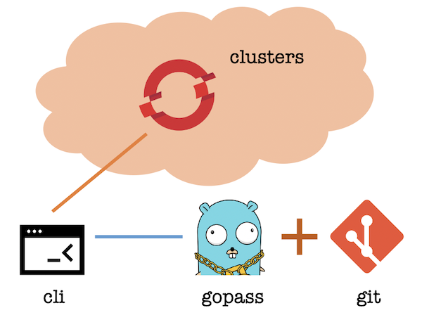

Managing Your OpenShift Clusters Securely and Effectively
MorningSpace
## The Problem
* Work with many clusters simultaneously.
* Each cluster requires login credential.
* Save login credential somewhere in plain text is insecure.
* The login session will be expired after a while.
* Clusters from a pool are short-lived with access information:
* Hard to remember.
* Easy to be out-of-date.
## Enhanced OpenShift CLI
* A shell on top of the original OpenShift CLI (oc command).
* Allow you to manage large amount of OCP clusters securely and efficiently.
* Supports all original oc commands plus:
* Login cluster with full context information provided only once, then use alias to re-login at any time.
* Organize many clusters hierarchically, switch among them by partial input and fuzzy search with nice shell prompt.
* Share cluster context with your team members for large scale project and team collaboration.
Behind the Scene
- Use gopass to save cluster context into local secret store.
- Maps cluster context to human-memorable alias.
- Use git to share cluster contexts remotely.

## Getting Started
* [Install enhanced oc and its dependencies](https://morningspace.github.io/oc/docs/#/quick-start?id=install)
* oc: the original OpenShift CLI for cluster manipulation
* gopass: run on top of gpg and git for secret data management
* gpg: for data encryption and decryption
* git: for encrypted data storing and sharing
* [Setup environment](https://morningspace.github.io/oc/docs/#/quick-start?id=setup)
* [Login cluster for the first time](https://morningspace.github.io/oc/docs/#/basic-use?id=login-cluster-for-the-first-time)
* [Login cluster using context alias](https://morningspace.github.io/oc/docs/#/basic-use?id=login-cluster-using-context-alias)
## More Stories
* [Organize cluster contexts hierarchically](https://morningspace.github.io/oc/docs/#/advanced-use?id=organize-cluster-contexts-hierarchically)
* [Choose among multiple clusters](https://morningspace.github.io/oc/docs/#/advanced-use?id=choose-among-multiple-clusters)
* [Fuzzy search](https://morningspace.github.io/oc/docs/#/advanced-use?id=fuzzy-search)
* [Customize shell prompt](https://morningspace.github.io/oc/docs/#/advanced-use?id=customize-the-shell-prompt)
## Team Sharing
* [Setup for team member](https://morningspace.github.io/oc/docs/#/quick-start?id=setup-for-team-member)

Thanks !
Find me by visiting: